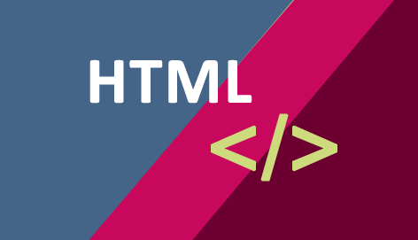

Muitas pessoas se encantaram com a Web e gostariam que ela fizesse parte da sua vida pessoal e/ou profissional. Comigo foi assim, com alguns amigos também e, acredito, que com você também foi assim. Afinal, quem não queria fazer parte desta história? Acontece que muitas pessoas que entram neste mundo do desenvolvimento web sequer sabem, de fato, como a Web funciona. Iniciam querendo aprender a criar sites com HTML, CSS, JavaScript, PHP ou sua linguagem predileta sem saber seu funcionamento. Por isso, é importante conhecermos alguns conceitos por trás do funcionamento da Internet e da World Wide Web. A Internet é uma rede que interconecta computadores e outros dispositivos como o seu celular em escala global para a transferência de dados entre eles. Já a World Wide Web é uma aplicação onde páginas são interligadas através de links e que se utiliza da Internet para funcionar. Muito sucinto, não? Então vamos ver com um pouco mais de detalhes…
HTML (abreviação para a expressão inglesa HyperText Markup Language, que significa Linguagem de Marcação de Hipertexto) é uma linguagem de marcação utilizada na construção de páginas na Web.Documentos HTML podem ser interpretados por navegadores.A tecnologia é fruto da junção entre os padrões HyTime e SGML.HyTime é um padrão para a representação estruturada de hipermídia e conteúdo baseado em tempo. Um documento é visto como um conjunto de eventos concorrentes dependentes de tempo (como áudio, vídeo, etc.), conectados por hiperligações. O padrão é independente de outros padrões de processamento de texto em geral. SGML é um padrão de formatação de textos. Não foi desenvolvido para hipertexto, mas tornou-se conveniente para transformar documentos em hiper-objetos e para descrever as ligações.
Para mais informações:
Clique aqui
Para auxiliar no aprendizado em HTML clique na imagem a baixo:

Elementos HTML são todos os tags que estão em arquivos HTML e que se transformam em elementos da árvore DOM. Cada elemento pode ter determinados atributos. Os elementos podem ter ainda conteúdo, incluindo outros elementos e textos. Elementos HTML representam semântica ou significado. Por exemplo, o elemento title representa o título de um documento. Na sintaxe HTML, a maioria dos elementos são escritos com marcadores (ainda chamados de etiquetas ou tags) de abertura e um marcador de fechamento, com o conteúdo entre os dois. As etiquetas são compostas do nome do elemento, fechadas por parênteses angulares. Uma marcação de fechamento possui ainda uma barra após o parêntese inicial, para distingui-lo da marcação de abertura.
Para mais informações neste tópico
Clique aqui
Durante a conversão do layout para HTML é comum acontecer alguns problemas e para melhor verificar o que ocorreu entre HTML e CSS a melhor forma é utilizar a ferramenta que os principais navegadores disponibilizar de análise, o popularmente conhecido “F12”.
Clique aqui para mais informações
Ou você pode assistir este video!
A "estrutura semelhante a uma árvore" vem do fato de que os elementos HTML podem ter outros elementos dentro deles. Você pode desenhar essa relação como uma árvore genealógica. Minha mãe teve várias crianças. A mãe também, e assim por diante ...
Em um navegador, essa estrutura aparece como uma série de caixas aninhadas. Há caixas dentro de caixas dentro de caixas, e assim por diante ...
Quando você lê um documento HTML como texto , você vê uma onda de recuos em movimento indo para cima e para baixo no lado esquerdo do documento. Quanto mais recortado for um elemento, mais aninhado será a correspondente "caixa".
Um editor de texto é uma das ferramentas mais usadas em qualquer sistema operativo. Além das funcionalidades básicas, este tipo de ferramentas integram hoje muitas funções direccionadas para a programação, registo de notas e outras funcionalidades mais avançadas.